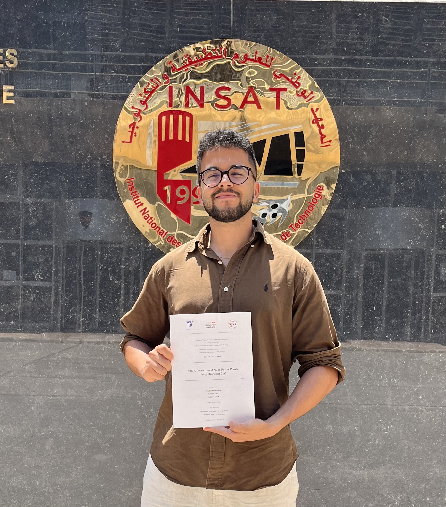
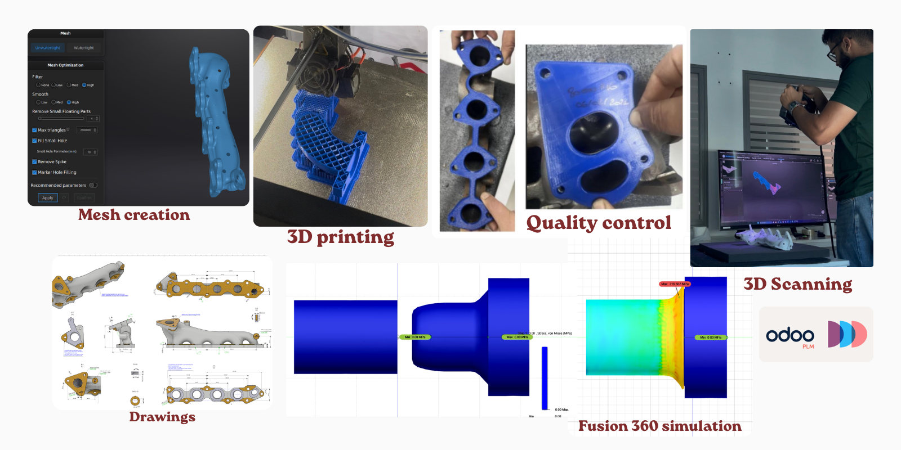

National Institute of Applied Science and Technology
Industrial Instrumentation and Maintenance
Engineering Student
I design intelligent engineering systems at the intersection of machine learning, industrial maintenance, embedded control, and renewable energy.

I'm an Industrial Instrumentation and Maintenance engineering student at the National Institute of Applied Science and Technology (INSAT). I build end-to-end systems that combine deep learning, computer vision, and hands-on mechanical and industrial engineering.
I've applied this across academic projects, personal builds, and two engineering internships, working with tools like PyTorch, YOLO and industrial ERP systems. I'm currently looking for research and engineering internship opportunities where I can keep working on applied AI for industrial and energy systems.
View Resume LinkedIn ProfileSmart Inspection of Solar Power Plants Using Drones and AI
An end-to-end automated inspection system for photovoltaic power plants, combining drone imagery and deep learning. Processes RGB and thermal aerial images to detect and classify panel defects in real time through a Flask dashboard.
Stack: Python, PyTorch, Ultralytics YOLO, Flask, Torchvision
Open GitHub Repo Academic ReportCNN Autoencoder + Explainable Heatmaps
An unsupervised CNN autoencoder trained only on normal (defect-free) data. Detects defects via reconstruction error with an explainable heatmap overlay, and uses z-score calibration for production-ready PASS / REVIEW / FAIL decisions.
Stack: Python, TensorFlow/Keras, OpenCV, NumPy, Flask, Git
Open GitHub RepoBidirectional Pipe Reverse Engineering for Fusion 360
A Fusion 360 Python add-in that automates the pipe reverse engineering workflow in both directions — extracting centerline geometry from a CAD sketch to generate machine-ready THOMAN bending instructions, and reconstructing the 3D centerline directly from edited THOMAN values so manual optimizations can be verified before a pipe is cut. Cuts per-pipe processing time from 10 minutes to 5 seconds.
Stack: Python, Autodesk Fusion 360 API, openpyxl
Open GitHub Repo Academic ReportRemaining Useful Life (RUL) estimation with deep learning
An end-to-end predictive maintenance system estimating the Remaining Useful Life of aircraft turbofan engines, using NASA's C-MAPSS dataset and a stacked LSTM architecture on multivariate sensor time-series data.
Stack: Python, TensorFlow, Keras, Pandas, NumPy, Scikit-Learn, Dash, Plotly, LSTM
Open GitHub RepoHorizontal-Axis Wind Turbine (HAWT) scale model
Designed and 3D-printed a scale model of a horizontal-axis wind turbine using SolidWorks 2023, covering the full engineering design cycle: research, functional analysis (SADT & FAST), CAD modeling, technical drawings, and basic RDM stress analysis.
Stack: SolidWorks 2023, 3D Printing

LRT Innovation Labs
Reverse engineering and PLM management for automotive exhaust system components (pipes, manifolds, catalytic converters).
Tools: Fusion 360, EinScan Pro 2X Plus, Python, openpyxl, Odoo
Coats Industrial Tunisia
4-week internship evaluating material and human flow in the dyeing department.
Key skills: Industrial time study, Lean manufacturing, SAP, process documentation, quality control
Full report (French) →
Open to engineering internships, research collaborations, and scholarship programs — feel free to reach out 😉.
Say hello